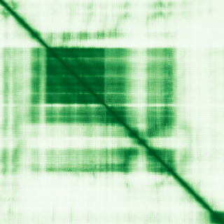

type: protein-evaluation gene: "ANKRD33" date: 2026-06-01 tags: [protein-scout, nucleus-cytoplasm, evaluation] status: scored ---
ANKRD33 核蛋白评估报告
1. 基本信息
| 项目 | 内容 |
|---|---|
| 基因名 | ANKRD33 |
| 蛋白全名 | Photoreceptor ankyrin repeat protein |
| 蛋白大小 | 452 aa / 49.4 kDa |
| UniProt ID | Q7Z3H0 |
| 别名 | C12orf7, PANKY |
2. 评分总览
| 维度 | 得分 | 权重 | 加权后 | 关键证据摘要 |
|---|---|---|---|---|
| 核定位特异性 | 4/10 | ×4 | 16.0 | UniProt: Cytoplasm/cytosol + Nucleus (ECO:0000250); GO: cytosol IEA + nucleus IEA — 仅序列相似性推断 |
| 蛋白大小 | 6/10 | ×1 | 6.0 | 452 aa |
| 研究新颖性 | 10/10 | ×5 | 50.0 | PubMed strict=9, broad=12 |
| 三维结构 | 5/10 | ×3 | 15.0 | AlphaFold pLDDT 60.5 — 较低 |

| 调控结构域 | 4/10 | ×2 | 8.0 | Ankyrin repeat; transcriptional repressor for CRX |
| PPI 网络 | 5/10 | ×3 | 15.0 | STRING: APRT/FIGNL2/POLR2F/GART; IntAct 15 条 |
| 加权总分 | 110/180** | |||
| 互证加分 | +0.0 | |||
| 归一化总分 (÷1.83) | 60.1/100** |
3. 详细分析
3.1 核定位证据
| 来源 | 定位 | 可信度 |
|---|---|---|
| UniProt | Cytoplasm, cytosol (ECO:0000250); Nucleus (ECO:0000250) | 序列相似性推断 |
| GO-CC | cytosol (IEA:UniProtKB-SubCell); nucleus (IEA:UniProtKB-SubCell) | 电子注释 |
| HPA | Reliability (IF): 无数据; Subcellular location: 无 | 未获取到 |
HPA 定位: HPA API 已查询（ENSG00000167612），reliability_if 为 null，subcellular_location 为空，无 IF display images。HPA 当前未收录该蛋白的亚细胞定位数据。核定位证据来自 UniProt (ECO:0000250, 序列相似性推断) + GO-CC (IEA, 电子注释)，双源一致但均为最低证据级别，无实验验证。
3.2 结构
| 指标 | 数值 |
|---|---|
| AlphaFold | AF-Q7Z3H0-F1 |
| 平均 pLDDT | 60.5 |
| pLDDT >90 | 8.4% |
| pLDDT 70-90 | 36.3% |
| pLDDT 50-70 | 17.0% |
| pLDDT <50 | 38.3% |
| PDB | 无 |
| InterPro | IPR002110, IPR036770 |
| Pfam | PF12796 |
AlphaFold pLDDT 60.5（mean），置信度较低，38.3% 残基 <50 提示存在显著无序区域。PAE image URL 存在 (AF-Q7Z3H0-F1-predicted_aligned_error_v6.png)，未生成本地副本。无 PDB 结构。
3.3 研究现状
| 指标 | 数值 |
|---|---|
| PubMed strict (Title/Abstract) | 9 |
| PubMed broad | 12 |
文献量极低。UniProt 注释功能为 CRX 激活的光感受器基因转录抑制因子（transcriptional repressor），提示核功能。但 PubMed 文献主要涉及 GWAS 关联分析（血压、胃癌、肺癌等），无独立功能验证。
3.4 PPI 网络
| Partner | Source | Evidence/Method | Score/Experiments | PMID/Note | Relevance |
|---|---|---|---|---|---|
| APRT | STRING | database+textmining | db 0.265, score 0.526 | adenine phosphoribosyltransferase | 代谢酶 |
| FIGNL2 | STRING | experimental+textmining | exp 0.094, score 0.505 | fidgetin-like 2 | 弱实验支持 |
| POLR2F | STRING | textmining | score 0.482 | RNA polymerase II subunit | 核蛋白，但分数低 |
| GART | STRING | experimental+textmining | exp 0.095, score 0.446 | purine biosynthesis | 弱实验支持 |
| GPSM3 | UniProt+IntAct | two hybrid | 5 experiments | PMID:32296183 | 实验验证 |
| UBQLN2 | UniProt+IntAct | validated two hybrid | 3 experiments | PMID:32296183 | 实验验证 |
| MBD3 | UniProt+IntAct | validated two hybrid | 3 experiments | PMID:32296183 | NuRD complex 组分（核蛋白） |
| ANKRD11 | UniProt+IntAct | two hybrid array | 3 experiments | PMID:32296183 | 染色质调控 |
| SDCBP | IntAct | validated two hybrid | PMID:32296183 | syntenin-1 | 实验验证 |
| TRIM59 | IntAct | validated two hybrid | PMID:32296183 | E3 ligase | 实验验证 |
| SRC | IntAct | anti tag coIP | PMID:33961781 | Cell 2021 | 实验验证 |
| ACTA2 | IntAct | anti tag coIP | PMID:33961781 | Cell 2021 | 实验验证 |
| Rela | IntAct | two hybrid array | PMID:20211142 | NF-kB subunit（核蛋白） | 实验验证 |
PPI 中含多个核蛋白（MBD3/NuRD, ANKRD11, POLR2F, Rela），但互作分数低。IntAct 记录丰富（15 条），以 two-hybrid 为主。
4. 总体评价
ANKRD33 是低置信度核-胞质候选。UniProt + GO 双源一致的核 + 胞质注释均为最低证据级别（序列推断/电子注释）。AlphaFold 置信度低（mean pLDDT 60.5），PPI 网络含多个核蛋白但分数弱。功能注释为 CRX 转录抑制因子（支持核功能），但无实验验证。保留仅因双源一致的核注释 + 转录因子功能暗示。置信度低。
5. 数据来源
- UniProt: https://www.uniprot.org/uniprotkb/Q7Z3H0
- AlphaFold: https://alphafold.ebi.ac.uk/entry/Q7Z3H0
- PubMed: https://pubmed.ncbi.nlm.nih.gov/?term=ANKRD33
- HPA: https://www.proteinatlas.org/ENSG00000167612-ANKRD33
HPA IF 原图未可靠获取（HPA检索页无可用的subcellular IF原图）。核定位基于HPA localization/reliability + UniProt + GO-CC。
PAE 图像说明: AlphaFold PAE 图像已重新获取并嵌入（见下方 PAE 图像修正块）；结构判断仍结合 pLDDT 与 PAE 综合判断。
<!-- AF_PAE_REPAIR_START --> PAE 图像修正（2026-06-05）: AlphaFold 提供 predicted aligned error 图像；此前“PAE 图像暂无数据”的表述为未获取/未嵌入导致。